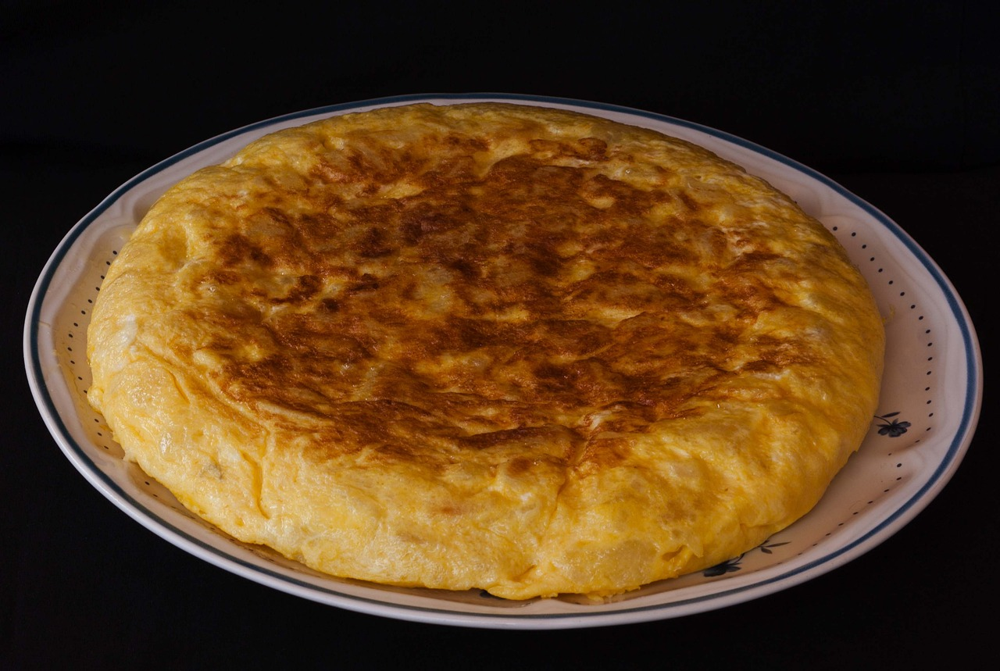

Tortilla

This recipe is from
Chefkoch
and it shows you how to make a traditional spanish tortilla with potatos.
Ingredients
- 500g potatos
- 150g onions
- 4 eggs
- 250ml olive oil
- salt
Instructions
- Peel and dice potatoes into small (0.5 - 1 cm) cubes, sprinkle with a level teaspoon of salt.
- Heat approximately 250 ml of olive oil in a 24 cm diameter pan, add potato cubes. Potatoes should be just covered with oil. Reduce heat to medium and fry potatoes for about 12 - 15 minutes.
- Finely chop onions and sauté in a second pan with a little olive oil until translucent and golden brown in 10 - 15 minutes.
- Crack eggs into a large bowl, beat vigorously with a whisk, and add salt.
- Strain potatoes from olive oil using a sieve. Add potatoes and onions to the eggs in the bowl and let it sit for 3 - 5 minutes.
- Heat 2 - 3 tablespoons of olive oil, pour the tortilla mixture into the pan, and fry for 2 minutes. When the mixture starts to brown (do not let the eggs set), flip the tortilla using a plate.
- Simply place the plate on the tortilla and flip the pan so that the tortilla is on the plate. Then slide the tortilla back into the pan. Fry for 1 minute on the other side. The tortilla should be still liquid inside.
- Serve with bread or salad as side dishes.